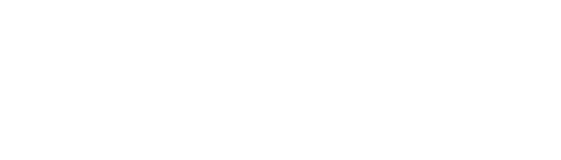
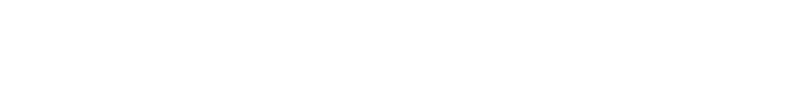

5+ years designing SaaS applications and AI products for enterprises. Presently working at LeewayHertz, A Hackett Group Company.
With a foundation in engineering, I bring problem-solving, systems thinking, and analytical skills into the world of product design. My approach blends technical precision with creativity to craft solutions that are functional, intuitive, and user-centered. My goal is to design products that not only work seamlessly but also create meaningful experiences.
Shipped for
Enterprise teams who live in data-heavy software, where every screen carries a business decision.
- Three finance portals
- Troubleshooting copilot
- Five connected portals

IC agreements search chatbot- AI claim assessment tool

Website redesign- Knowledge-base chatbot
- Web and mobile apps
- GETTR Pay
- Web and mobile apps
Selected Work
ZBrain Admin Console: designed with governance at its core
The console where admins monitor and govern agents, connectors and API keys in one place; live across 12+ enterprise organisations.
View case study
CE CoPilot: an AI assistant and its admin console
An AI assistant that helps field engineers at a global semiconductor equipment maker troubleshoot from approved manuals; 68% less time to a fix and 14% fewer escalations in the pilot.
View case study
AR Cash App: a workbench for the payments the bots can’t clear
The workspace where a global healthcare company’s AR team clears the payments its AI and bots can’t; ambiguous exceptions halved, live in 5 countries.
View case study
ZBrain Design System: one source for designers and AI chats
A design system turned into an AI-ready Markdown guide, so any AI chat prototypes on-brand screens; in use across the admin and user portals.
View case study
DHS Tutor: an AI exam tutor that can only quote the book
An NBDHE study app whose AI tutor answers only from the DHS Review Book and cites the page; a prototype made for a client pitch.
View case study
AI Stuff
Some products I built in collaboration with AI
Open to product design roles
Let’s talk
Whether it’s an opportunity, or just a conversation,
I’m always open. Tell me what’s on your mind.